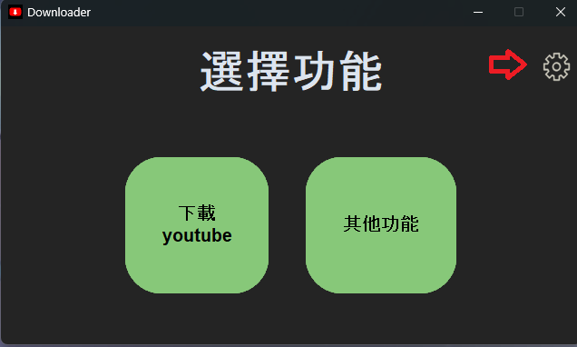
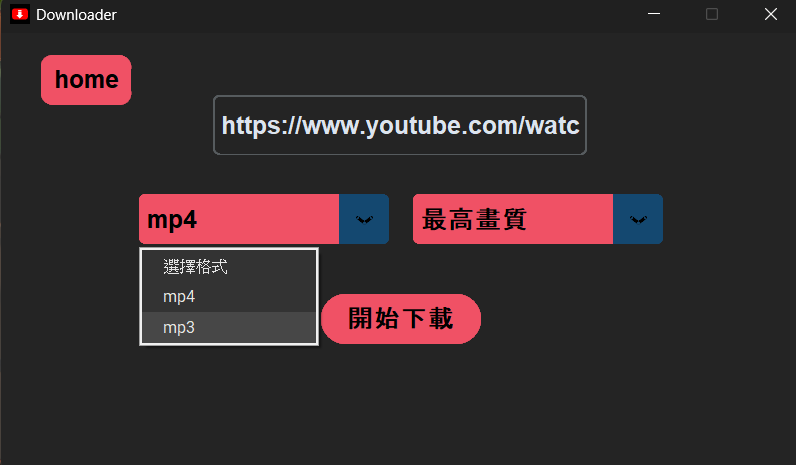
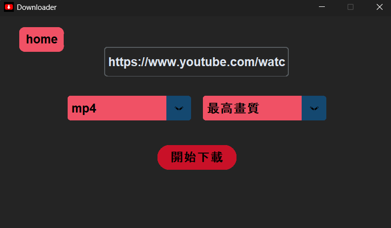
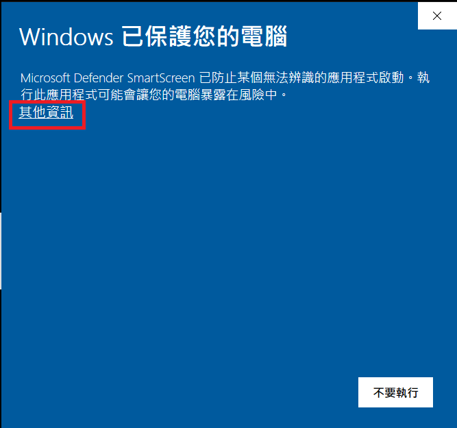

把整個 YouTube
收進硬碟裡。
單一影片、Shorts、播放清單，甚至整個頻道——一鍵下載到最高畫質影像與 192kHz / 32bit 高音質音訊。開放原始碼，永久不收費。
影像畫質
最高畫質
音訊規格
192kHz / 32bit
0
GitHub Stars
0
總下載次數
0
Forks
—
最新版本
Features
一套工具，涵蓋你所有的下載需求
從一支 Shorts 短片到整個頻道的所有作品，Downloader 下載器都能以最高品質完整保存。
單一影片 / Shorts
貼上網址即可下載單支影片或 Shorts 短影音，無需額外設定。
播放清單下載
一次下載整個播放清單，依序自動排隊處理，不必逐支貼網址。
全頻道下載
輸入頻道網址，批次下載該頻道所有已發布的影片內容。
最高畫質影像
自動抓取來源提供的最高解析度，畫質不打折。
192kHz / 32bit 高音質
保留原始音軌細節，適合音樂收藏與後製使用。
依網速全速下載
下載速度不設上限，實際表現取決於你的網路頻寬。
Walkthrough
三步驟，開始下載
從貼上網址到完成下載，整個流程直覺得不需要教學也能上手。

取得並貼上網址
複製 YouTube 影片、Shorts、播放清單或頻道網址，貼到軟體輸入欄。

選擇畫質與音質
依需求選擇影片畫質，或切換為 192kHz / 32bit 高音質音訊輸出。

開始下載
按下下載即開始處理，速度取決於你目前的網路連線狀況。
小提醒：本軟體推薦搭配 PotPlayer（64 位元） 播放器使用，以獲得最佳的播放相容性與畫質呈現。

Good to know
看到安全性警告？
這是正常現象。
由於申請程式簽章憑證需要付費成本，而本軟體堅持完全免費、不收取任何費用，因此執行時 Windows 可能會顯示未知發行者的警告視窗。
看到警告視窗時，點擊紅框標示的「其他資訊」區域，再選擇「仍要執行」即可繼續。
若仍有疑慮，原始碼完全公開於 GitHub，歡迎自行檢視、打包與編譯。
部分下載功能會用到 cookies，建議使用小帳登入操作，並請遵守 YouTube 社群規範。
Q & A
常見問題
部分下載情境需要 cookies 才能正常運作，而使用 cookies 存在被 YouTube 限制帳號的可能性，因此建議使用小帳操作；不使用 cookies 也可以下載，但部分功能可能受限。
因為程式簽章憑證需要付費，本軟體並未申請，因此 Windows 會顯示安全性提示。點擊警告視窗中紅框標示的區域即可繼續執行。若仍有疑慮，歡迎至 GitHub 查看原始碼並自行打包。
支援 Shorts 短片、單一影片、播放清單，以及整個頻道的批次下載，並提供最高畫質影像與 192kHz / 32bit 高音質音訊選項。
建議搭配 PotPlayer（64 位元）播放器，能提供最佳的格式相容性與畫質呈現效果。
Android 版本目前正在開發中，尚未有明確發布時程，請關注 GitHub 儲存庫以獲得最新進度。
Changelog
更新日誌
載入中...
V1.1.0
正在向 GitHub 取得最新的 Release 資訊，請稍候。